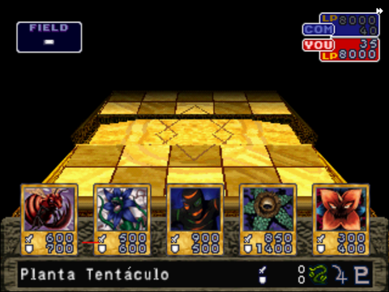
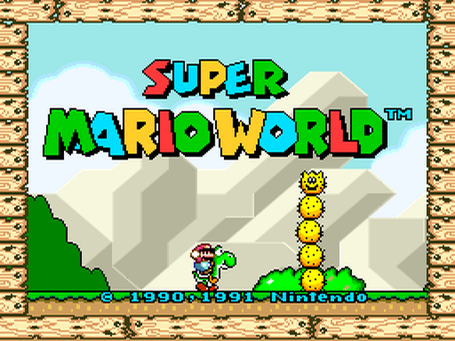

Ports nativos para PlayStation 2
Jogos clássicos rodando direto no processador do PS2, sem emulador, em português do Brasil e de graça. Escolha um jogo para ver como baixar e jogar.
Todos rodam num PS2 de verdade pelo OPL, com a sua própria cópia do jogo original.

Duelos e batalhas 3D a 60 fps, cartas com os nomes da dublagem brasileira e trapaças prontas.

Tradução nova, tela larga 16:9 de verdade nas fases e um Gravador que prepara o pendrive pelo navegador.
Em desenvolvimento. Assim que a primeira versão sair, ela aparece aqui.
Os ports não trazem o jogo: você usa a cópia do seu disco ou cartucho, e o port lê os gráficos, sons e dados dela.
Na página de cada port tem o pacote para baixar e as instruções.
Pelo criador ou gravador no navegador, com a sua cópia do jogo. Nada é enviado para a internet.
Abra pelo OPL, como aplicativo ou como ISO com capa na lista de jogos.
Os ports são e vão continuar gratuitos. Se eles te divertiram, qualquer valor ajuda a fazer os próximos.
f19e4d1b-f35c-4541-919b-87a2cb540b9c
De fora do Brasil? / Outside Brazil? ko-fi.com/guilhermesoti
Doação é voluntária e não libera nada extra.